Geomorphometry II:
Multitemporal DEM analysis
Helena Mitasova
Outline (learning objectives)
- raster time series analysis,
- quantification of coastal change
- temporal framework
3D mapping technologies
- Continuous surface measured at discrete points
- Human selected points
- Automated point sampling
- Terrestrial (land) surface
- Stereophotogrammetry: aerial and satellite imagery
- Lidar: aerial and terrestrial
- Interferometric radar: aerial, satellite, space shuttle
- RTK GPS
- Bathymetry mapping
single and multiple beam sonar
Ground-based 3D mapping
RTK GPS, terrestrial lidar
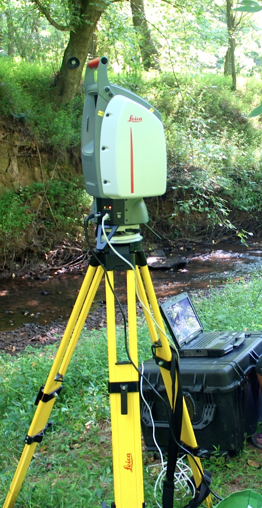
Ground-based mobile 3D mapping
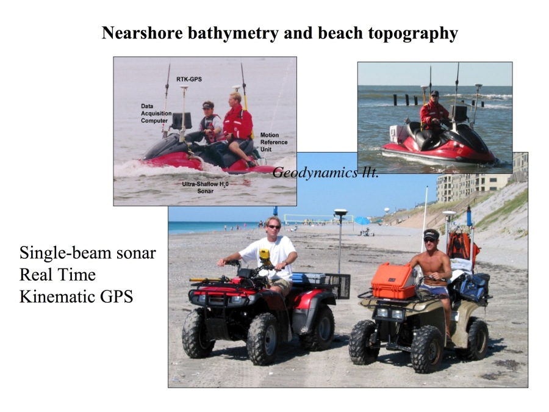
Ground-based mobile 3D mapping
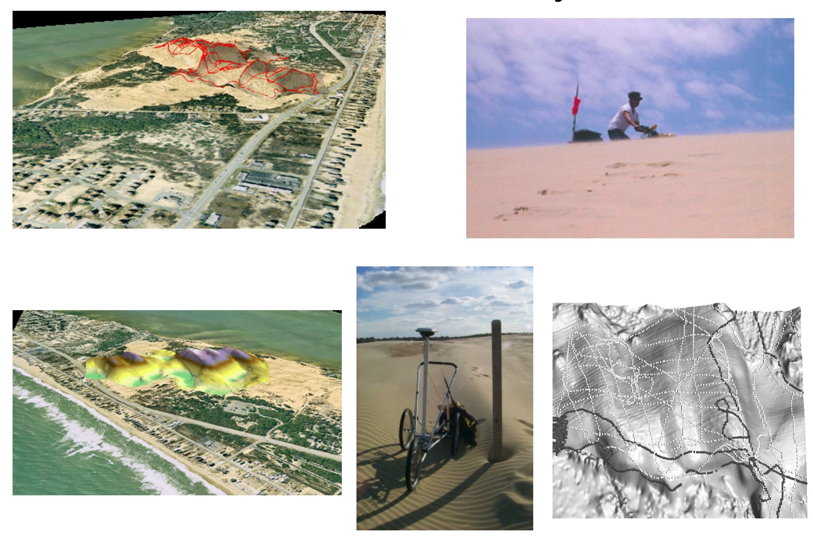
Aerial 3D mapping
UAS and airplanes with lidar or camera for nadir and oblique imagery
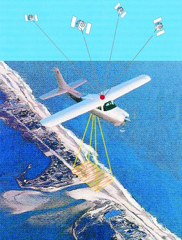
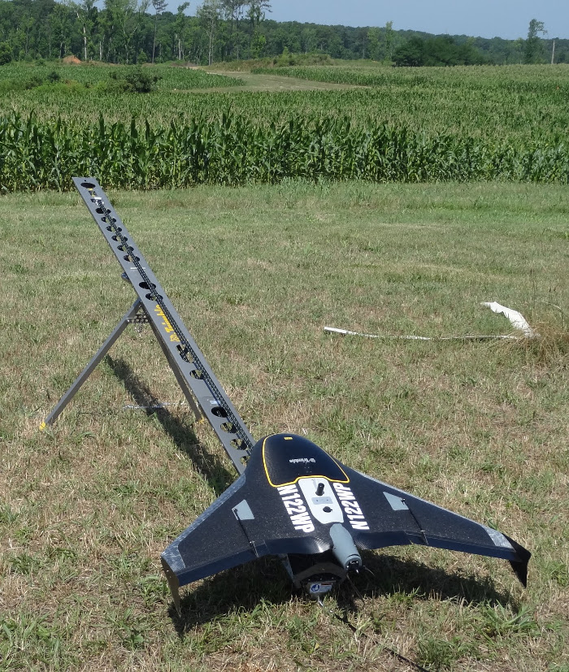
Satellite 3D mapping
Shuttle Radar Topography, TanDEMX, Imagery

Bathymetry 3D mapping
Single and multibeam sonar
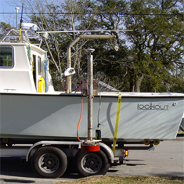
Digital elevation models
- Digital Terrain Model (DTM):
- bare ground elevation surface
- interface between solid Earth and atmosphere/anthroposphere/biosphere
- Digital Surface Model (DSM):
- elevation surface including above ground features (vegetation, structures, ...)
- interface between Earth surface with water, vegetation, structures and atmosphere
- Digital Bathymetry Model (DBM)
- elevation surface at the bottom of water bodies
- interface between solid Earth surface and hydrosphere (bottom surface of lakes, rivers and ocean)
- Seamless topobathy: continuous solid earth surface, DTM+DBM
- Digital Crop or Canopy Surface Model (DCM), Digital Urban Model (DUM), ....
DTM and DSM
Small rural watershed - NCSU experimental fields
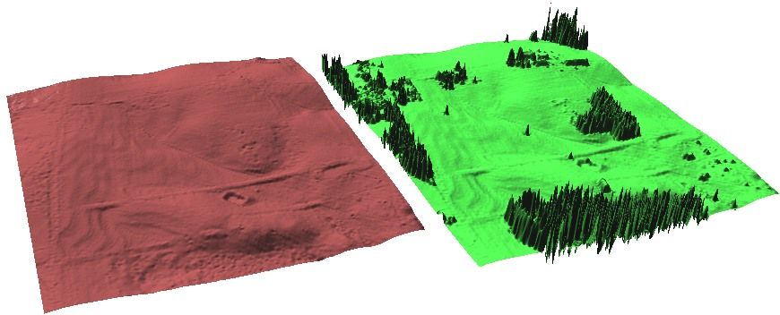
DBM sonar and lidar
North Carolina coast
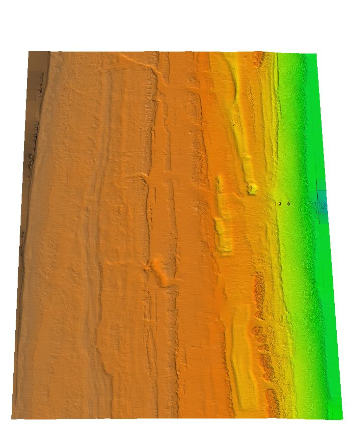
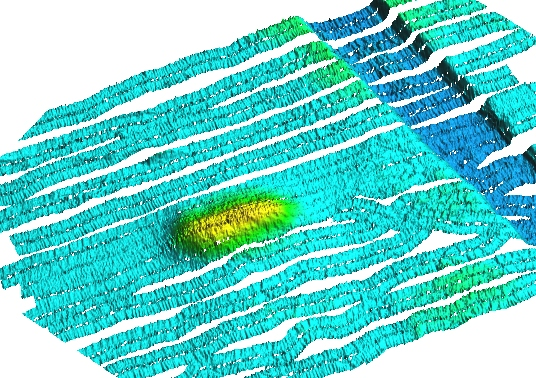
Result of 3D mapping
- human selected points (photogrammetry and GPS)
- points along lines (digitized contours or profiles)
- point clouds (lidar, Structure from Motion)
Examples
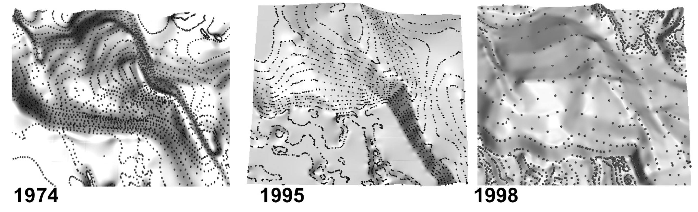
Point cloud patterns
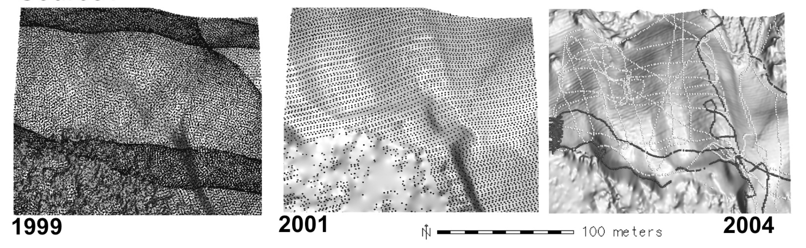
Digital Elevation Models
- Regular grid (raster)
- Unstructured meshes: Triangular Irregular Network (TIN)
- Contours - elevation isolines derived from grid or TIN
- Parametric Mesh: complex structures
- Unstructured point clouds: measured data
Regular grid: raster DEM
Derived from measured points by gridding:
- if there is at least one point for each grid cell – binning, per-cell statistics
- if some grid cells do not include points – spatial interpolation or approximation
Scattered points to raster
From given scattered points to points at regular grid


Raster representation does not preserve the original data points
Raster DEM properties
- simple data structure and algorithms
- easy to combine with imagery
- uniform resolution - potential for undersampling and oversampling
- representation of faults and sharp breaklines requires very high resolution
Most public elevation data are distributed as raster DEM through
On-line repositories
Unstructured mesh: TIN
- Triangular Irregular Network: constructed from the measured points by triangulation (before computer age this technique was used for manual interpolation of contours from surveyed points)
- Delaunay Triangulation: maximizes the smallest angle of the triangles to avoid skinny triangles
- Constrained Delaunay Triangulation – includes predefined edges that cannot be flipped
- TIN is a vector data model representation, that usually preserves the original data points
Scattered points to TIN
From given scattered points to Delaunay TIN
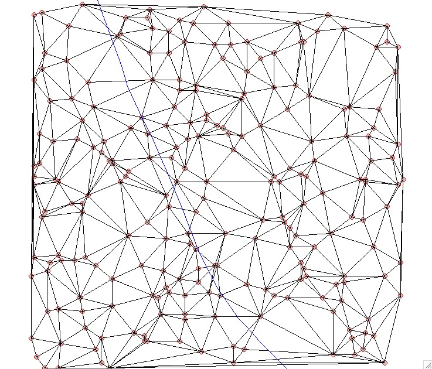
TIN properties
- requires pre-defined breaklines for man-made features, valleys, faults, etc.
- density of TIN is adjusted to surface complexity
- additional points may need to be interpolated to create smooth surface
When to use TIN:
- engineering applications,
- manual modification of model is desired(design),
- complex faults need to be represented,
- multiscale representation for visualization
TIN issues
- discontinuity in first derivative along edges: artificial triangular structures on the surface
- dams can be created across valleys if stream is not defined as a breakline
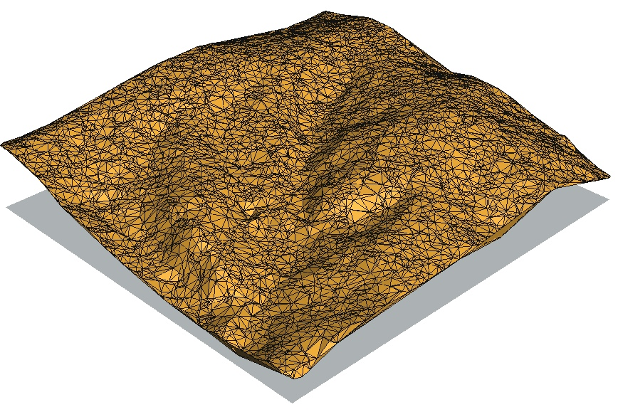
TIN issues
If input are points on contours: flats on the top of hills or ridges if no peaks are defined
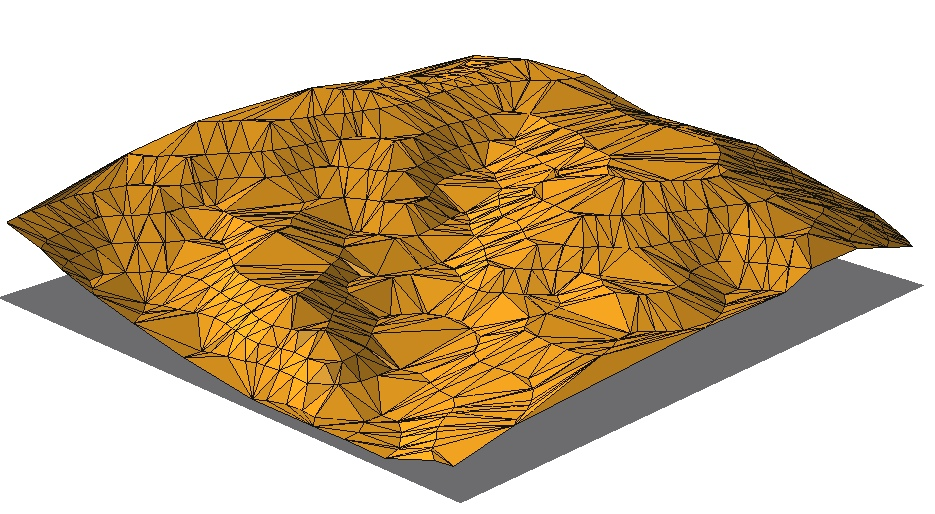
Elevation isolines: contours
- traditional approach for representation of elevation, drawn by hand from measured mass points by interpolating along triangle edges
- automated procedures: from TIN or grid,
- not very suitable for highly detailed, noisy data such as lidar
- very useful when the surface has simple geometry
- selecting contour interval: depends on slope and resolution
Contours from lidar
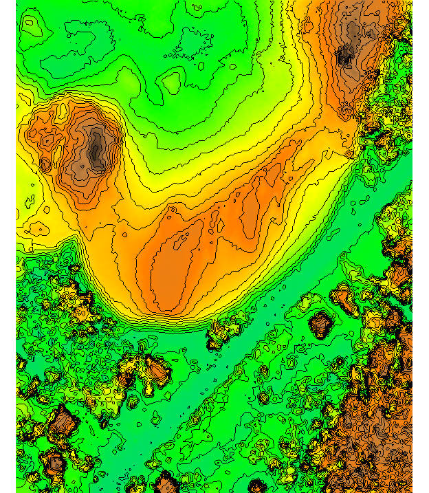
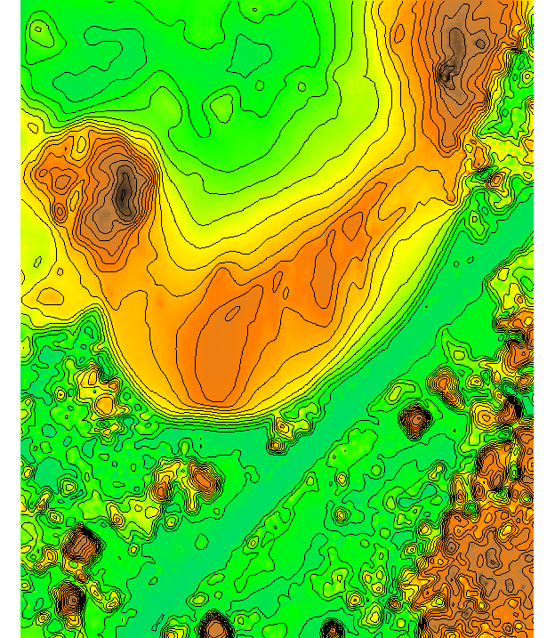
3D parametric meshes
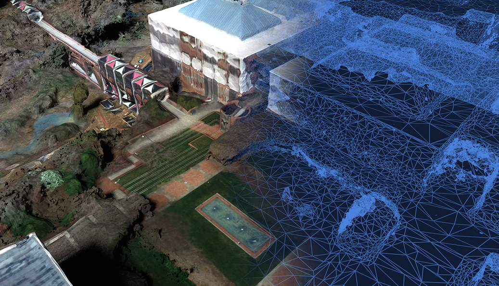
Point clouds
- Set of $(x, y, z, r, i, ...)$ measured points reflected from Earth surface or objects on or above it,
- $x,y,z$ are georeferenced coordinates,
- r is the return number and
- i is intensity,
- r:g:b may be also measured
- Formats
- ASCII (x,y,z, ...) format
- binary LAS and LAZ format: industry lidar data exchange format
- header, record info, x,y,z,i, scan dir, edge of flight line, time, classification, etc.
Multiple return point clouds
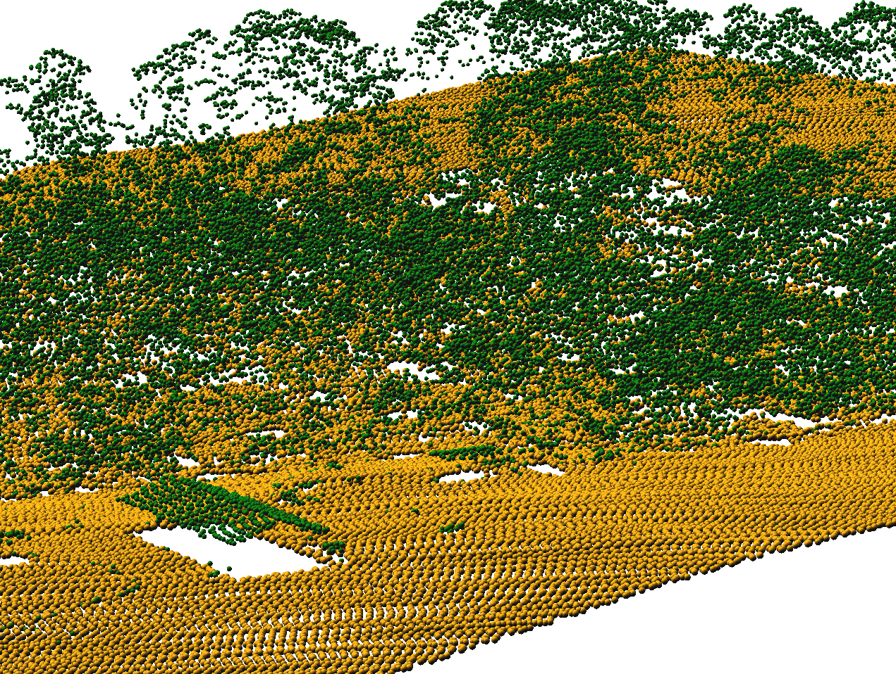
Point cloud processing
- filtering outliers (birds etc.)
- resolving swath overlaps
- classification
- bare earth point extraction
- canopy extraction
- structures and power lines extraction
- computing DEMs
Multiple return point clouds
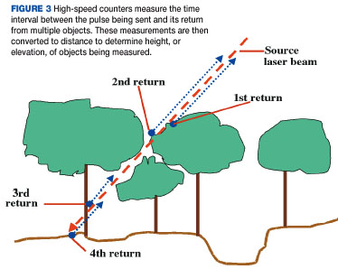
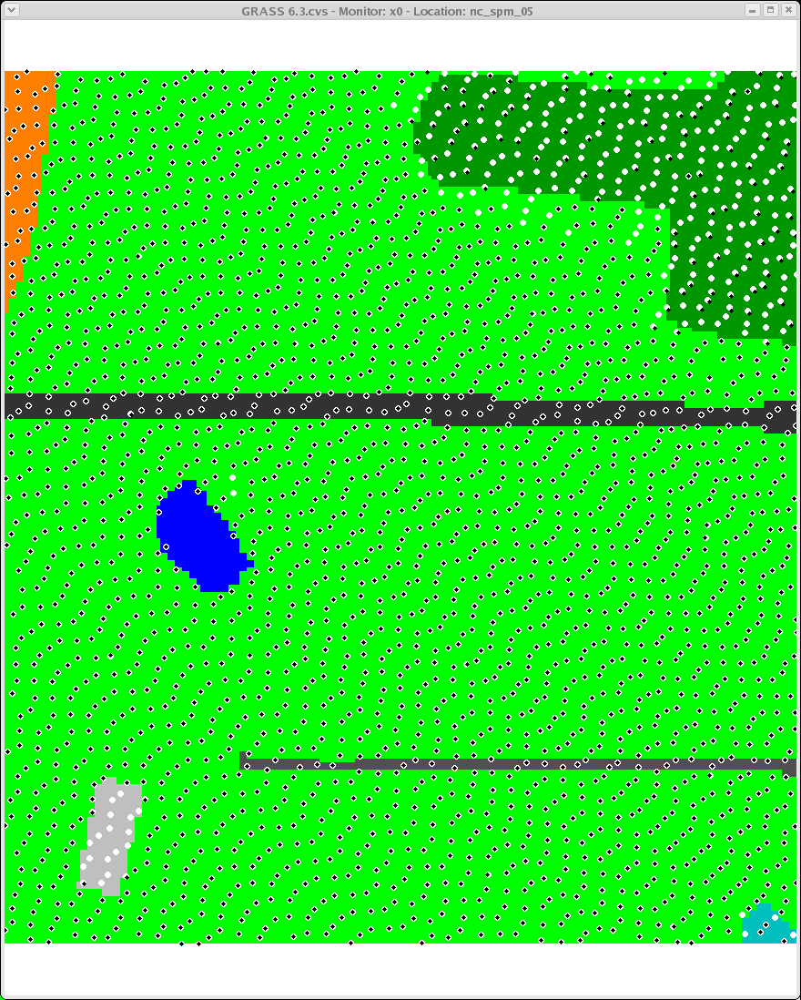
Bare ground points are sparser in vegetated areas
Point cloud analysis: binning
Binning: fast method for analyzing point clouds and generating DEMs using per-cell processing
- analysis: number of points per cell, range, stddv
- Methods for DEM: mean, min, max, nearest
- sufficient for many applications
- no need to import the points, on-fly raster generation
- may be noisy, include no-data spots
Point elevation mean: Jockey's Ridge
Jockey's Ridge 1999, unfiltered single return lidar point cloud: 1m grid cell binning using maximum elevation
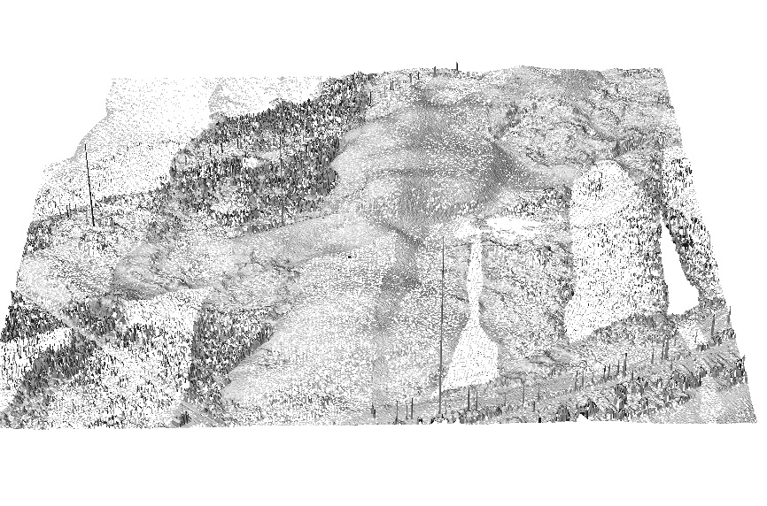
Result has many NULL cells – what to do?
Point elevation mean: Jockey's Ridge
Jockey's Ridge 1999, 3m grid cell binning using mean elevation
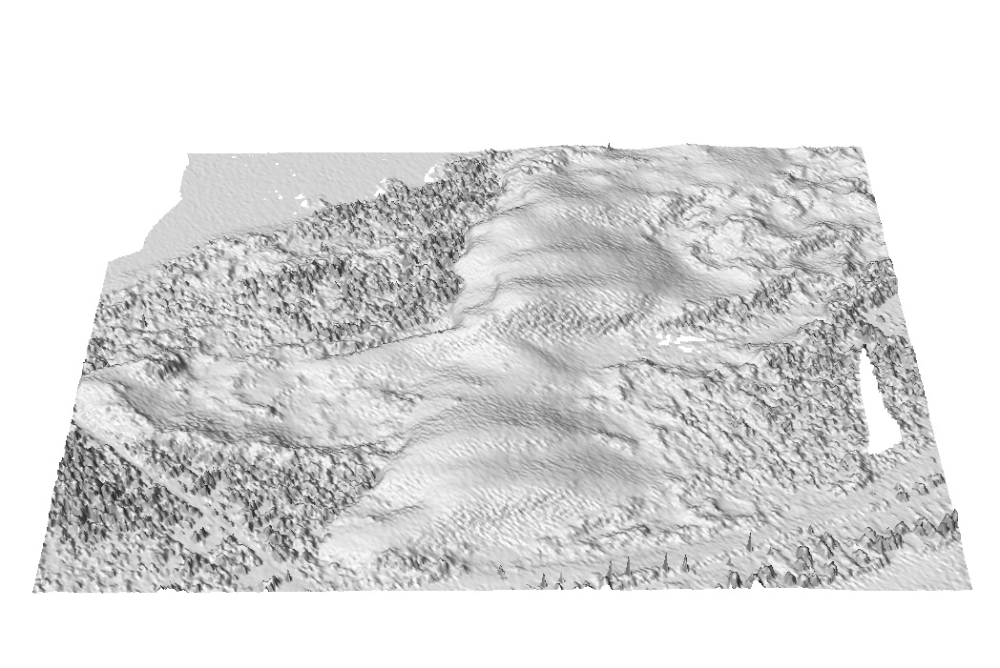
Result is somewhat fuzzy – what to do?
Interpolated DEM: Jockey's Ridge
Jockey's Ridge 1999, 1m DEM interpolated by RST spline method
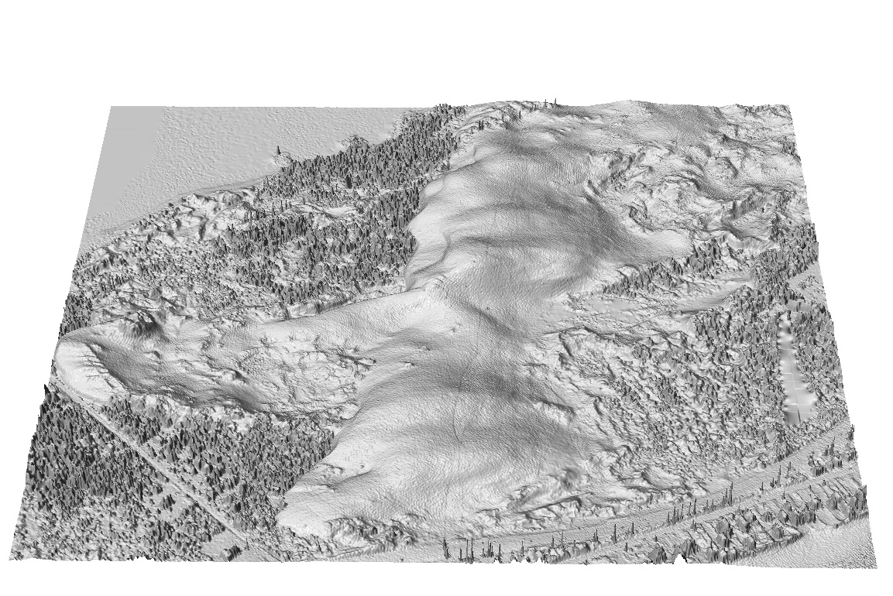
Point density: 2013 Wake county lidar
Number of points per 1m grid cell: all returns and first return
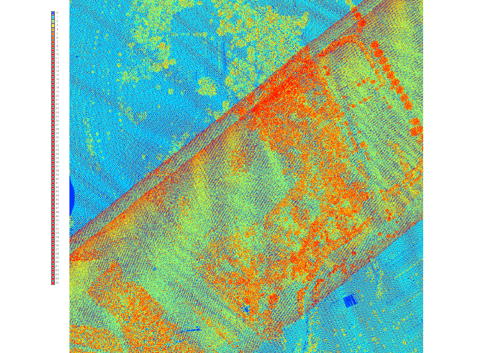

Point density: 2013 Wake county lidar
Number of points per 1m grid cell: all returns and bare ground returns
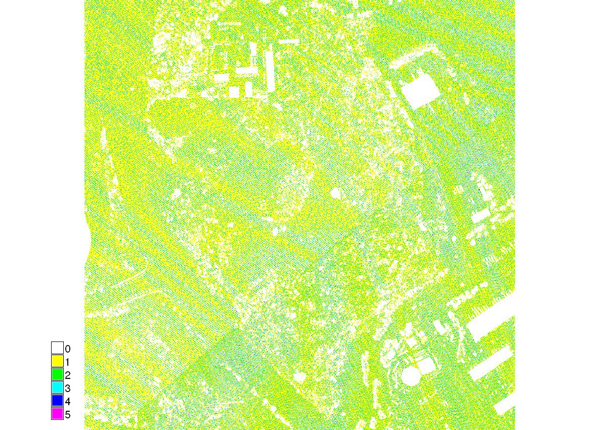
Lidar and Mayan City
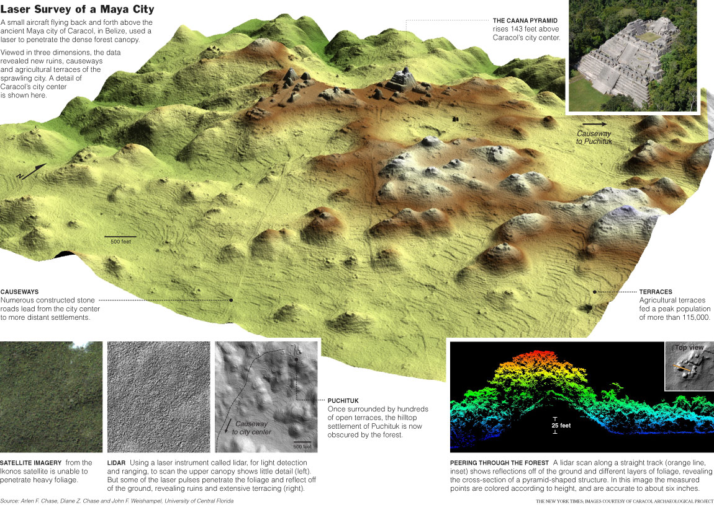
Learn more
Find more examples in the 2014 lecture, MEA592-004/GIS595-002:
Multidimensional Geospatial Modeling material and GIS595 UAS course